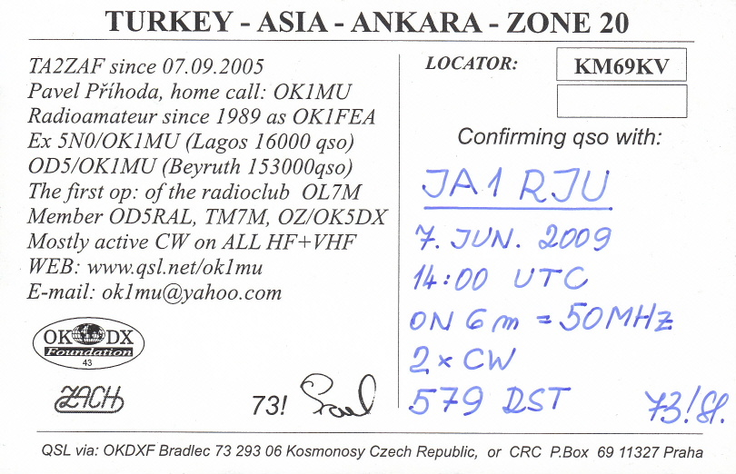

今シーズン50MHzでアクティブにQRVしているトルコのTA2ZAF。6月7日夜に入感
| Flash Back ! |
[Back Issues Jul.2009]
TIME:UTC(JST-09:00)
Report from JA1RJU(PM95sq)
31.Jul.2009(15:00c)
BV2YA/b 06:30- 50.001 CW Beacon
Report from JA1RJU(PM95sq)
30.Jul.2009(15:00c)
BV2YA/b 01:00- 50.001 CW Beacon
Report from JA1RJU(PM95sq)
29.Jul.2009(15:00c)
BV2YA/b 00:50- 50.001 CW Beacon
VR2SIX/b 00:50- 50.075 CW Beacon
VR2SIX/b 08:00- 50.075 CW Beacon
Report from JA1RJU(PM95sq)
28.Jul.2009(15:00c)
BV2YA/b 01:00- 50.001 CW Beacon
BV2YA/b 07:15- 50.001 CW Beacon
VR2SIX/b 07:25- 50.075 CW Beacon
Report from JA1RJU(PM95sq)
27.Jul.2009(15:00c)
BV2YA/b 00:30- 50.001 CW Beacon
VR2SIX/b 00:30- 50.075 CW Beacon
Report from JA1RJU(PM95sq)
26.Jul.2009(15:00c)
BV2YA/b 00:30- 50.001 CW Beacon
BW9/JH3GCN 00:32 50.115 CW
BW9/JH3GCN 00:36 50.115 SSB
BU2AU 05:35 50.115 SSB
HL1VAU/4 06:06 50.110 CW
BG4KYA 06:10 50.110 SSB
BV2009WGK 06:13 50.106 CW
BV0K 06:31 50.115 CW
BV4PK 06:53 50.107 CW
HL1IBG 06:55 50.105 CW CQing
BV2YA/b 10:00- 50.001 CW Beacon
VR2SIX/b 10:00- 50.075 CW Beacon
Report from JA1RJU(PM95sq)
25.Jul.2009(15:00c)
BV2YA/b 08:00- 50.001 CW Beacon
VR2SIX/b 08:00- 50.075 CW Beacon
VR2009EAG 08:10 50.115 SSB OP & QSL VR2XMT
BD4CZX 08:10 50.115 SSB CQing
VR2UW 08:12 50.102 CW
BD4CZX 08:21 50.110 SSB
BD7NWF 08:25 50.130 SSB CQing
HL2AGC 08:26 50.130 SSB CQing
BU2AI 09:12 50.102 CW
DS1PCF/2 09:28 50.111 CW CQing
Report from JA1RJU(PM95sq)
24.Jul.2009(15:00c)
BV2YA/b 02:50- 50.001 CW Beacon
Report from JA1RJU(PM95sq)
23.Jul.2009(15:00c)
BV2YA/b 01:50- 50.001 CW Beacon
VR2SIX/b 01:50- 50.075 CW Beacon
Report from JA1RJU(PM95sq)
22.Jul.2009(15:00c)
BV2YA/b 00:40- 50.001 CW Beacon
VR2SIX/b 00:50- 50.075 CW Beacon
BV2YA/b 04:40- 50.001 CW Beacon
DU1EV/B 04:40- 50.008 CW Beacon
Report from JA1RJU(PM95sq)
21.Jul.2009(15:00c)
BV2YA/b 00:00- 50.001 CW Beacon
VR2SIX/b 00:00- 50.075 CW Beacon
Report from JA1RJU(PM95sq)
20.Jul.2009(15:00c)
(WZ8D 01:04 50.085 CW JA1.2)
BV2YA/b 03:15- 50.001 CW Beacon
VR2SIX/b 03:15- 50.075 CW Beacon
BV2YA/b 05:50- 50.001 CW Beacon
Report from JA1RJU(PM95sq)
19.Jul.2009(15:00c)
BD4QH 00:55 50.210 SSB
BV2YA/b 01:30- 50.001 CW Beacon
VR2SIX/b 01:30- 50.075 CW Beacon
BA8AG 01:30 50.102 CW CQing
BU2AI 01:46 50.1025 CW CQing
BD9BA 01:49 50.103 CW
DU1EV 02:10 50.103 CW CQing
BA8AG 02:50 50.101 CW CQing
(LA8AJA 08:46 50.104 CW JA6)
(LA8HGA 09:13 50.116/114 CW JA4)
(08:16z〜F8DBF.LA8AJA.LA8HGA...etc CW JA2〜6.7.9)
BU2AI 10:00 50.103 CW CQing
Report from JA1RJU(PM95sq)
18.Jul.2009(15:00c)
(00:00〜 K6FV/b.N6RMJ.K0GU.K9RX/7.VE3CDX/W7.K5XX.K6EL.W6XI.K7JA...etc)
K0GU 00:18 50.080 CW
DS4DBF 01:09 50.099 CW CQ NA
Report from JA1RJU(PM95sq)
17.Jul.2009(15:00c)
(22:09〜 N3XX.WZ8D.K4PI.K6EID.AC4TI...etc Report from QM08/05/PM96/84)
*********************************************
BV2YA/b 01:30- 50.001 CW Beacon
VR2SIX/b 01:30- 50.075 CW Beacon
BV2YA/b 05:30- 50.001 CW Beacon
VR2SIX/b 05:30- 50.075 CW Beacon
JI1FGX/DU9 06:50 50.110 SSB
Report from JA1RJU(PM95sq)
16.Jul.2009(15:00c)
BV2YA/b 08:20- 50.001 CW Beacon
Report from JA1RJU(PM95sq)
15.Jul.2009(15:00c)
BV2YA/b 00:30- 50.001 CW Beacon
VR2SIX/b 00:30- 50.075 CW Beacon
W3STX/KH0 00:34 50.130 CW CQing
UK9AA 04:14 50.103 CW CQing
UK9AA 04:48 50.103 CW still CQing
JD1BMM 04:51 50.103 CW Calling UK9AA
JD1BMM 05:06 50.107 CW CQing
DU7/PA0HIP 07:41 50.105 CW CQing
DU7/PA0HIP 09:00 50.105 CW CQing
Report from JA1RJU(PM95sq)
14.Jul.2009(15:00c)
W3STX/KH0 04:40 50.130 CW CQing Saipan Is
JD1BMM 05:00 50.180 CW strong!
Report from JA1RJU(PM95sq)
13.Jul.2009(15:00c)
UN1SIX/b 07:05- 50.0234 CW Beacon
(4Z4TL 07:30 50.102 CW JA2.8)
(YT1QQ 07:45 50.099 CW JA8)
(CT1HZE 07:58 50.082 CW JA8)
UK8OM 09:08 50.103 CW CQing FB
UK8OM 09:33 50.103 CW CQ again!
Report from JA1RJU(PM95sq)
12.Jul.2009(15:00c)
K0HA 23:45 50.097 CW
*********************************************
K0HA 00:00 50.097 CW
(KA9CFD 00:02 50.093 CW JA7)
(W7GJ 00:49 50.099 CW JA2)
BV2YA/b 02:00- 50.001 CW Beacon
VR2SIX/b 02:00- 50.075 CW Beacon
W3STX/KH0 05:40 50.130 CW (QSL via JR3STX)
AH2G/B 06:15- 50.0045 CW Beacon
DK1MAX 07:48 50.107 CW
Report from JA1RJU(QM06cb)
11.Jul.2009(15:00c)
(K0GU 22:12 50.083 CW QM08)
(VE7SL 22:19 50.083 CW QM08)
N5DG 22:23 50.083 CW QM08/QM06/PM96
(K5RK 22:33 50.094 CW JA7.9.0)
K0HA 22:45 50.097 CW
JD1BMM 22:58 50.181 SSB
W7GJ 23:15 50.087 CW QM06/PM95
W7GJ 23:18 50.090 CW QM06 599 !
DS1PCF/2 23:58 50.112 CW
*********************************************
W3STX/KH0 00:03 50.130 CW
W3STX/KH0 00:12 50.130 CW QSL via JR3STX
BA8AG 00:36 50.097 CW
DS5JQK 00:46 50.150 CW
K0GU 01:31 50.104 CW
6K5CQY 01:40 50.104 CW
K0GU 01:40 50.104 CW QSO with 6K5CQY
N7RK 02:09 50.083 CW
VR2SIX/b 04:00- 50.075 CW Beacon
Report from JA1RJU(QM06cb)
10.Jul.2009(15:00c)
VR2SIX/b 01:13- 50.075 CW Beacon
AH2G/B 07:20- 50.0045 CW Beacon strong!
BU2AQ 08:45 50.110 SSB
BV2009WGK 09:35 50.106 CW
BV2YA/b 12:25- 50.001 CW Beacon
VR2SIX/b 12:25- 50.075 CW Beacon
|
◎昨日の北米の賑わいがウソの様に、今朝のコンデションは平穏？。
やはり、50MHzでは"二匹目のドジョウは"直ぐには出てこない？。
北米の賑わいをよそに、午後のヨーロッパ方面のコンデションは落ち込んでしまったのが残念。 現在ドイツに滞在しているJR1AIB・井上さんが、今週末(日本時間の土・日の夕方)にHB0(LIECHTENSTEIN)からJA向けに6mの運用を予定している。 使用するRIGは不明だが、600WのAMP(東京ハイパワー)と4eleでの運用。 コールサインはHB0/DJ1AIBを使用する。 JA向けとは言え、コンデションが予測出来ない夏場の伝搬に加え、 ヨーロッパ方面のコンデションが下降ぎみのこの時期の運用なのでQSOはかなり難しい...？。 |
Report from JA1RJU(QM06cb)
09.Jul.2009(15:00c)
= Good Open to East Coast US and Canada into QM08!! 54 QSO's =
22:35z-
[W1(W1JJ.K1SG.W1VHF.AA1QD.K1IM.K1NA.K1RP.K1MS.N1BUG.W1JR)
W2(K2QE).W3(W3CMP.W3EP.K3KYR.W3UR.K3TKJ).W4(W4SO.K4BP...etc).
W5(W5KI.N5DG...etc.).W6.W7(AA7A.K7JA.W7RV...etc).
W8(N8GZ.WZ8D...etc).W9(KA9CFD...etc).W0(K0HA...etc).
VE2(VE2DFO...etc).VE3.XE2D and HI3TEJ...etc]
---------------------------------------------------
W4SO 22:35 50.085 CW
BD9BA 22:58 50.105 CW
(HI3TEJ 22:57 50.083 CW QM08)
(W1JJ 22:58 50.083 CW QM08)
(W1VHF 23:00 50.083 CW QM08)
(AA1QD 23:03 50.083 CW QM08)
(K1MS 23:04 50.083 CW QM08)
(K1IM 23:05 50.083 CW QM08)
(W3EP 23:10 50.083 CW QM08)
VE2DFO 23:11 50.083 CW QM08 & 06(H)
(W1JR 23:12 50.083 CW QM08)
(K1NA 23:14 50.083 CW QM08)
(K1RP 23:17 50.083 CW QM08)
KA9CFD 23:25 50.083 CW QM08 & 06(H)
*********************************************
K7JA 00:20 50.083 CW QM08 & 06(H)
W7RV 00:40 50.083 CW QM08)
KA9CFD 00:45 50.090 CW
N5DG 00:46 50.090 CW
AA7A 00:49 50.090 CW
W7RV 00:51 50.090 CW
W5KI 01:17 50.090 CW
K0HA 01:18 50.090 CW
XE2D 01:25 50.090 CW
K9WZB 01:31 50.090 CW
|
◎今朝の北米のオープンは夏季の"Es伝搬"の時期としては特筆すべきものとなった。 22:30z(0730JST)頃から入感してきた北米南部のW4に続いて、コンデションは目まぐるしく変化し、 全米の各エリアが次々と入感してきた。JA側では特に東北地方南部のQM08でのコンデションが良好で、 22:50zを過ぎる頃から、W1を中心にVE2、W1、W2、W3までの北米東部と多数QSO出来ている。 同時間に入感したVE2DFOはQM06/5の関東エリアでも短時間の入感があったが、 QM08とは信号のレベルに地域差があり、W1エリアにはQM06/5の信号が届いていながらも、 残念ながらQSOには至らなかった。 北米東部の入感のピークは23:10分頃の30分程度の短い時間帯だったが、 この日のコンデションが完全に終わったのは日本時間の1140JST(0240z)過ぎだった。 F2伝搬とは異なる珍しい夏場の"BIG OPEN"だった。 |
Report from JA1RJU(QM06cb)
08.Jul.2009(15:00c)
BV2YA/b 09:50- 50.001 CW Beacon
VR2SIX/b 09:50- 50.075 CW Beacon
BV2009WGK 10:15 50.106 CW
BD4TH 10:25 50.106 CW
Report from JA1RJU(PM95sq)
07.Jul.2009(15:00c)
BV2YA/b 23:30- 50.001 CW Beacon
VR2SIX/b 23:30- 50.075 CW Beacon
----------------------------------------------------
[21:59z-
W4GCB.W9RN.N4VN.W4SO.K3KO.N5XR.W5OZI.WD5K
K5XX.K5RK.N5DG.W7CNK.WY0V.W0VX.K0HA...etc.]
********************************************
[00:00-
K0HA.KM0T.K5RK.WD5K.N5DG.XE2D...etc. -00:28]
----------------------------------------------------
K0HA 00:00- 50.095 CW
BV2YA/b 00:00- 50.001 CW Beacon
BV2009WGK 02:19 50.106 CW
V6C 08:14 50.115 SSB OC-11
Report from JA1RJU(PM95sq)
06.Jul.2009(15:00c)
BV2YA/b 00:50- 50.001 CW Beacon
DU7/PA0HIP 07:48 50.105 CW CQing
DU7/PA0HIP 08:22 50.105 CW CQing
Report from JA1RJU(PM95sq)
05.Jul.2009(15:00c)
◎"6m AND DOWN CONTEST"
---------------------------------------------
BV2YA/b 22:10- 50.001 CW Beacon
(VR2009EAG 23:35 50.115 SSB JA6)
(N5DG 23:45 50.098 CW JA6)
*********************************************
(BV2009WGK 00:22 50.106 CW JA6)
(BM2JQL 00:29 50.120 SSB JA6)
9M6XRO 02:25 50.115 SSB
9M6XRO 06:00 50.102 CW
(V6C 08:25 50.115 SSB JA6)
(9M6XRO 08:39 50.110 CW JA6)
Report from JA1RJU(PM95sq)
04.Jul.2009(15:00c)
◎"6m AND DOWN CONTEST" (今日のDX-Reportの詳細は省略します)
---------------------------------------------------------
[00:00z-
K6FV/B.K0HA.K6QXY.9M2TO.JD1BMM.EN500I.UR3IFD.F8RZ
UY3ZZ.UY6IM.YT1AR.E75A.E72B(JA0).SV1DH.9A2SB.9A6R
DJ6RX.DL5MAE.DJ5JK.LX1NO(JA5).IK1EGC.IK0FTA.HA0DU
EA7KW.EA7RM.EA7HG.IS0GOX.CT1HZE(JA6).JT1CO.BG4TRF
BA8AG.BA4SI.DS1NSR.HL1IBG.9M6XRO.BV2YA/b...etc...
-13:52z]
----------------------------------------------------------
Report from JA1RJU(PM95sq)
03.Jul.2009(15:00c)
VR2SIX/b 01:30- 50.075 CW Beacon
HL2GY 02:47 50.105 CW
UT7QF 04:40 50.102 CW
BA4SI 04:52 50.099 CW
UW7CN 05:02 50.106 CW CQing No ans !?
UT7QF 05:20 50.103 CW CQing good sig!
UN1CZ 05:30 50.115 CW
UT5URW 05:31 50.084 CW
UR6QA 05:53 50.102 CW strong !
EN500I 07:00 50.112 CW
YO9HP 07:28 50.087 CW
Report from JA1RJU(PM95sq)
02.Jul.2009(15:00c)
VR2SIX/b 23:50- 50.075 CW Beacon
(JA6YBR/b 23:50- 50.017 CW Beacon (Miyazaki)
***************************************************
VR2SIX/b 04:40- 50.075 CW Beacon
(JA6YBR/b 04:40- 50.017 CW Beacon (Miyazaki)
UK8OM 05:50 50.101/103 CW
SP3DOI 06:05 50.101 CW strong !
UK9AA 06:32 50.103 CW UP+1KHz
UK8OM 06:34 50.103/099 CW
SP3RNZ 06:49 50.106 CW
UR3IFD 07:05 50.106 CW UP+1KHz
UK9AA 07:05 50.103 SSB/CW
(LA5YJ.EA7KW.DK3WG...etc. 07:20- CW JA0)
(OE4VIE 07:28 50.118 CW JA0)
JD1BMM 07:36 50.122 CW Minami torishima.
CT1HZE 07:52 50.088 CW
CT1HZE 08:13 50.088 CW good sig ! (IM57nh=11,292Km)
(EA8BLL 08:50 50.082 CW QSO with JA8)
UK8OM 13:22 50.099 CW UP+1KHz
(SV1DH 13:22 50.099 CW JA6)
(UY6IM 13:54 50.103 CW JA6)
(UK9AA 14:02 50.103 CW JA2-0)
(UY6IM 14:22 50.105 CW JA3.4.6)
Report from JA1RJU(PM95sq)
01.Jul.2009(15:00c)
BA8AG 02:14 50.101 CW CQing
UT7QF 05:42 50.102 CW
UT7QF 06:24 50.102 CW again good !
UK9AA 06:34 50.103 CW UP+1KHz good signal !
UK9AA 06:56 50.103 SSB RS59!
(SV1DH 07:00 50.100 CW JA1.2.3)
UK9AA 07:13 50.103 CW/SSB again !
BG4KYA 07:22 50.110 SSB
UK9AA 07:45 50.103 CW/SSB CQing still good !
